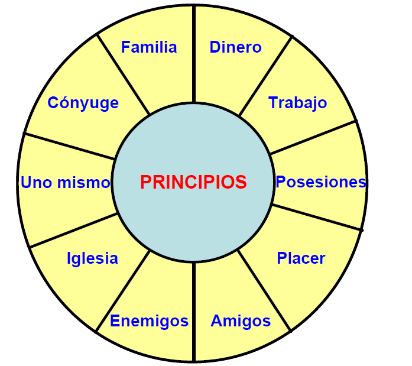

Sinopsis: Los 7 hábitos de la gente altamente efectiva por Stephen R. Covey
Desde 1991 en la lista semanal de libros más vendidos del Publishers Weekly y a menudo encabezándola, este indiscutible
best seller se merecía una puesta al día, y eso es lo que ha hecho su autor con esta nueva edición: la estructura
general no cambia, ya que hubiera resultado absurdo, dado su alto grado de efectividad, solo se amplía, se extiende
hacia nuevos temas y detalles que el lector sin duda agradecerá. El punto de partida general, pues, sigue siendo el
mismo: el hecho ineludible de que casi todo el mundo intuye que su comportamiento, tanto en el trabajo como en la vida
privada, podría mejorar en muchos aspectos, pero pocos saben cómo conseguirlo.
A partir de ahí, Stephen Covey, el llamado Sócrates americano, no da consejos paternalistas ni se dedica a sermonear sin
ton ni son. Su método es claro, certero y eficiente: casi un cursillo dividido en siete etapas que el lector deberá
asimilar y poner en práctica por su propia cuenta, adaptándolas a su personalidad y aplicándolas libremente en todos los
ámbitos de su vida cotidiana. Para ello, el autor se sirve de anécdotas penetrantes y significativas destinadas a
hacernos reflexionar sobre cada uno de nuestros actos y sobre el modo de acceder al cambio, a la verdadera efectividad:
desde la visión personal hasta la autorrenovación equilibrada, pasando por el liderazgo personal, la administración
personal, el liderazgo interpersonal, la comunicación empática y la cooperación creativa.
Teniendo en cuenta todo esto, y a través del desarrollo de ciertos conceptos, el lector acaba comprendiendo que todo lo
que hagamos deberá estar de acuerdo con lo que realmente veamos. Es decir que, si queremos cambiar la situación,
deberemos cambiarnos a nosotros mismos con eficacia, en primer término tendremos que cambiar nuestras percepciones. El
resultado es la construcción de una autoconfianza a prueba de bomba a través del desarrollo del propio carácter, de la
integridad, la honestidad y la dignidad humana necesarias para transformar nuestro universo laboral e íntimo en algo
auténtico e intransferible.
Referencia de wikipedia
